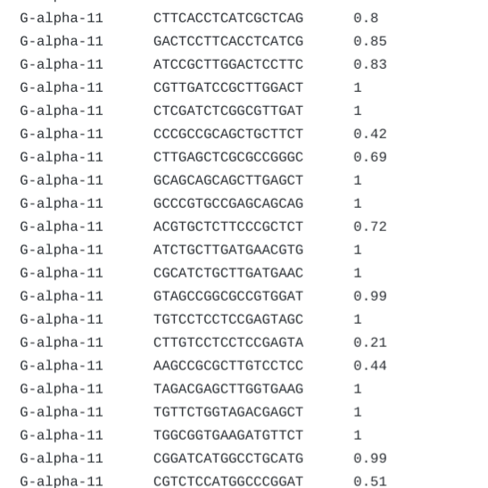
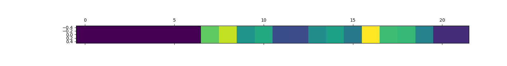

Training data for the Machine Learning model
Open ASO
View Code
View Video
Motivation:
Antisense oligonucleotides (ASOs) have a high potential therapeutic value as they can be used to target any transcript and regulate its expression. Can machine learning be used to identify aspects of RNA targets that make antisense oligonucleotide (ASOs) more effective?
Overview:
In this project, I experimented with various machine learning models (CNN, SVM) on a short sequence of nucleotide pairs to predict ASO efficiency. In addition, I used Grad-CAM to explain the weights of a trained CNN model and determine the importance of each position in the nucleotide pairs sequence.
Background:
This project happened in HackSeqRNA 2020 in a team led by Lela Lackey. I was a member of the Machine Learning team with Alex Sweeten and Shawn Hsueh.
Method
Support Vector Machine (SVM)
As a baseline model, I used scikit learn's built in SVM and achieved a mean squared error of 0.0726.
2D-Convolution
Each genetic sequence was converted into a bitmap. I implemented a 3-layer cnvolution neural network using Keras, and achieved a mean squared error of 0.0645.
1D-Convolution
Eventually, I encoded the nucleotide base sequence into a 1-D sequence with depth=4. (Each depth represents one of ATGC) This better encoding further reduced the mean squared error to 0.0496.
Interpretability using Grad-CAM
